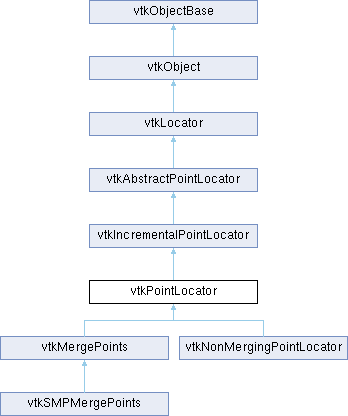

|
Etrek
|
|
Etrek
|
quickly locate points in 3-space More...
#include <vtkPointLocator.h>

Public Member Functions | |
| vtkIdType | FindClosestPoint (const double x[3]) override |
| int | InitPointInsertion (vtkPoints *newPts, const double bounds[6]) override |
| int | InitPointInsertion (vtkPoints *newPts, const double bounds[6], vtkIdType estNumPts) override |
| void | InsertPoint (vtkIdType ptId, const double x[3]) override |
| vtkIdType | InsertNextPoint (const double x[3]) override |
| int | InsertUniquePoint (const double x[3], vtkIdType &ptId) override |
| vtkIdType | FindClosestInsertedPoint (const double x[3]) override |
| void | FindClosestNPoints (int N, const double x[3], vtkIdList *result) override |
| void | FindPointsWithinRadius (double R, const double x[3], vtkIdList *result) override |
| virtual vtkIdList * | GetPointsInBucket (const double x[3], int ijk[3]) |
| vtkIdType | FindClosestPoint (double x, double y, double z) |
| vtkTypeMacro (vtkPointLocator, vtkIncrementalPointLocator) | |
| void | PrintSelf (ostream &os, vtkIndent indent) override |
| vtkSetVector3Macro (Divisions, int) | |
| vtkGetVectorMacro (Divisions, int, 3) | |
| vtkSetClampMacro (NumberOfPointsPerBucket, int, 1, VTK_INT_MAX) | |
| vtkGetMacro (NumberOfPointsPerBucket, int) | |
| vtkIdType | FindClosestPointWithinRadius (double radius, const double x[3], double &dist2) override |
| virtual vtkIdType | FindClosestPointWithinRadius (double radius, const double x[3], double inputDataLength, double &dist2) |
| vtkIdType | IsInsertedPoint (double x, double y, double z) override |
| vtkIdType | IsInsertedPoint (const double x[3]) override |
| virtual void | FindDistributedPoints (int N, const double x[3], vtkIdList *result, int M) |
| virtual void | FindDistributedPoints (int N, double x, double y, double z, vtkIdList *result, int M) |
| vtkGetObjectMacro (Points, vtkPoints) | |
| void | Initialize () override |
| void | FreeSearchStructure () override |
| void | BuildLocator () override |
| void | ForceBuildLocator () override |
| void | GenerateRepresentation (int level, vtkPolyData *pd) override |
| Public Member Functions inherited from vtkIncrementalPointLocator | |
| vtkTypeMacro (vtkIncrementalPointLocator, vtkAbstractPointLocator) | |
| Public Member Functions inherited from vtkAbstractPointLocator | |
| vtkTypeMacro (vtkAbstractPointLocator, vtkLocator) | |
| vtkIdType | FindClosestPoint (double x, double y, double z) |
| void | FindClosestNPoints (int N, double x, double y, double z, vtkIdList *result) |
| void | FindPointsWithinRadius (double R, double x, double y, double z, vtkIdList *result) |
| virtual double * | GetBounds () |
| virtual void | GetBounds (double *) |
| vtkGetMacro (NumberOfBuckets, vtkIdType) | |
| Public Member Functions inherited from vtkLocator | |
| virtual void | Update () |
| vtkTypeMacro (vtkLocator, vtkObject) | |
| virtual void | SetDataSet (vtkDataSet *) |
| vtkGetObjectMacro (DataSet, vtkDataSet) | |
| vtkSetClampMacro (MaxLevel, int, 0, VTK_INT_MAX) | |
| vtkGetMacro (MaxLevel, int) | |
| vtkGetMacro (Level, int) | |
| vtkSetMacro (Automatic, vtkTypeBool) | |
| vtkGetMacro (Automatic, vtkTypeBool) | |
| vtkBooleanMacro (Automatic, vtkTypeBool) | |
| vtkSetClampMacro (Tolerance, double, 0.0, VTK_DOUBLE_MAX) | |
| vtkGetMacro (Tolerance, double) | |
| vtkSetMacro (UseExistingSearchStructure, vtkTypeBool) | |
| vtkGetMacro (UseExistingSearchStructure, vtkTypeBool) | |
| vtkBooleanMacro (UseExistingSearchStructure, vtkTypeBool) | |
| vtkGetMacro (BuildTime, vtkMTimeType) | |
| bool | UsesGarbageCollector () const override |
| Public Member Functions inherited from vtkObject | |
| vtkBaseTypeMacro (vtkObject, vtkObjectBase) | |
| virtual void | DebugOn () |
| virtual void | DebugOff () |
| bool | GetDebug () |
| void | SetDebug (bool debugFlag) |
| virtual void | Modified () |
| virtual vtkMTimeType | GetMTime () |
| void | RemoveObserver (unsigned long tag) |
| void | RemoveObservers (unsigned long event) |
| void | RemoveObservers (const char *event) |
| void | RemoveAllObservers () |
| vtkTypeBool | HasObserver (unsigned long event) |
| vtkTypeBool | HasObserver (const char *event) |
| vtkTypeBool | InvokeEvent (unsigned long event) |
| vtkTypeBool | InvokeEvent (const char *event) |
| std::string | GetObjectDescription () const override |
| unsigned long | AddObserver (unsigned long event, vtkCommand *, float priority=0.0f) |
| unsigned long | AddObserver (const char *event, vtkCommand *, float priority=0.0f) |
| vtkCommand * | GetCommand (unsigned long tag) |
| void | RemoveObserver (vtkCommand *) |
| void | RemoveObservers (unsigned long event, vtkCommand *) |
| void | RemoveObservers (const char *event, vtkCommand *) |
| vtkTypeBool | HasObserver (unsigned long event, vtkCommand *) |
| vtkTypeBool | HasObserver (const char *event, vtkCommand *) |
| template<class U, class T> | |
| unsigned long | AddObserver (unsigned long event, U observer, void(T::*callback)(), float priority=0.0f) |
| template<class U, class T> | |
| unsigned long | AddObserver (unsigned long event, U observer, void(T::*callback)(vtkObject *, unsigned long, void *), float priority=0.0f) |
| template<class U, class T> | |
| unsigned long | AddObserver (unsigned long event, U observer, bool(T::*callback)(vtkObject *, unsigned long, void *), float priority=0.0f) |
| vtkTypeBool | InvokeEvent (unsigned long event, void *callData) |
| vtkTypeBool | InvokeEvent (const char *event, void *callData) |
| virtual void | SetObjectName (const std::string &objectName) |
| virtual std::string | GetObjectName () const |
| Public Member Functions inherited from vtkObjectBase | |
| const char * | GetClassName () const |
| virtual vtkTypeBool | IsA (const char *name) |
| virtual vtkIdType | GetNumberOfGenerationsFromBase (const char *name) |
| virtual void | Delete () |
| virtual void | FastDelete () |
| void | InitializeObjectBase () |
| void | Print (ostream &os) |
| void | Register (vtkObjectBase *o) |
| virtual void | UnRegister (vtkObjectBase *o) |
| int | GetReferenceCount () |
| void | SetReferenceCount (int) |
| bool | GetIsInMemkind () const |
| virtual void | PrintHeader (ostream &os, vtkIndent indent) |
| virtual void | PrintTrailer (ostream &os, vtkIndent indent) |
Static Public Member Functions | |
| static vtkPointLocator * | New () |
| Static Public Member Functions inherited from vtkObject | |
| static vtkObject * | New () |
| static void | BreakOnError () |
| static void | SetGlobalWarningDisplay (vtkTypeBool val) |
| static void | GlobalWarningDisplayOn () |
| static void | GlobalWarningDisplayOff () |
| static vtkTypeBool | GetGlobalWarningDisplay () |
| Static Public Member Functions inherited from vtkObjectBase | |
| static vtkTypeBool | IsTypeOf (const char *name) |
| static vtkIdType | GetNumberOfGenerationsFromBaseType (const char *name) |
| static vtkObjectBase * | New () |
| static void | SetMemkindDirectory (const char *directoryname) |
| static bool | GetUsingMemkind () |
Protected Member Functions | |
| void | BuildLocatorInternal () override |
| void | GetBucketNeighbors (vtkNeighborPoints *buckets, const int ijk[3], const int ndivs[3], int level) |
| void | GetOverlappingBuckets (vtkNeighborPoints *buckets, const double x[3], const int ijk[3], double dist, int level) |
| void | GetOverlappingBuckets (vtkNeighborPoints *buckets, const double x[3], double dist, int prevMinLevel[3], int prevMaxLevel[3]) |
| void | GenerateFace (int face, int i, int j, int k, vtkPoints *pts, vtkCellArray *polys) |
| double | Distance2ToBucket (const double x[3], const int nei[3]) |
| double | Distance2ToBounds (const double x[3], const double bounds[6]) |
| void | GetBucketIndices (const double *x, int ijk[3]) const |
| vtkIdType | GetBucketIndex (const double *x) const |
| void | ComputePerformanceFactors () |
| Protected Member Functions inherited from vtkLocator | |
| void | ReportReferences (vtkGarbageCollector *) override |
| Protected Member Functions inherited from vtkObject | |
| void | RegisterInternal (vtkObjectBase *, vtkTypeBool check) override |
| void | UnRegisterInternal (vtkObjectBase *, vtkTypeBool check) override |
| void | InternalGrabFocus (vtkCommand *mouseEvents, vtkCommand *keypressEvents=nullptr) |
| void | InternalReleaseFocus () |
| Protected Member Functions inherited from vtkObjectBase | |
| vtkObjectBase (const vtkObjectBase &) | |
| void | operator= (const vtkObjectBase &) |
Protected Attributes | |
| vtkPoints * | Points |
| int | Divisions [3] |
| int | NumberOfPointsPerBucket |
| vtkIdList ** | HashTable |
| double | H [3] |
| double | InsertionTol2 |
| vtkIdType | InsertionPointId |
| double | InsertionLevel |
| double | HX |
| double | HY |
| double | HZ |
| double | FX |
| double | FY |
| double | FZ |
| double | BX |
| double | BY |
| double | BZ |
| vtkIdType | XD |
| vtkIdType | YD |
| vtkIdType | ZD |
| vtkIdType | SliceSize |
| Protected Attributes inherited from vtkAbstractPointLocator | |
| double | Bounds [6] |
| vtkIdType | NumberOfBuckets |
| Protected Attributes inherited from vtkLocator | |
| vtkDataSet * | DataSet |
| vtkTypeBool | UseExistingSearchStructure |
| vtkTypeBool | Automatic |
| double | Tolerance |
| int | MaxLevel |
| int | Level |
| vtkTimeStamp | BuildTime |
| Protected Attributes inherited from vtkObject | |
| bool | Debug |
| vtkTimeStamp | MTime |
| vtkSubjectHelper * | SubjectHelper |
| std::string | ObjectName |
| Protected Attributes inherited from vtkObjectBase | |
| std::atomic< int32_t > | ReferenceCount |
| vtkWeakPointerBase ** | WeakPointers |
Additional Inherited Members | |
| Static Protected Member Functions inherited from vtkObjectBase | |
| static vtkMallocingFunction | GetCurrentMallocFunction () |
| static vtkReallocingFunction | GetCurrentReallocFunction () |
| static vtkFreeingFunction | GetCurrentFreeFunction () |
| static vtkFreeingFunction | GetAlternateFreeFunction () |
quickly locate points in 3-space
vtkPointLocator is a spatial search object to quickly locate points in 3D. vtkPointLocator works by dividing a specified region of space into a regular array of "rectangular" buckets, and then keeping a list of points that lie in each bucket. Typical operation involves giving a position in 3D and finding the closest point.
vtkPointLocator has two distinct methods of interaction. In the first method, you supply it with a dataset, and it operates on the points in the dataset. In the second method, you supply it with an array of points, and the object operates on the array.
|
overridevirtual |
Build the locator from the input dataset. This will NOT do anything if UseExistingSearchStructure is on.
Implements vtkLocator.
|
overrideprotectedvirtual |
This function is not pure virtual to maintain backwards compatibility.
Reimplemented from vtkLocator.
|
overridevirtual |
Given a position x, return the id of the point closest to it. This method is used when performing incremental point insertion. Note that -1 indicates that no point was found. This method is thread safe if BuildLocator() is directly or indirectly called from a single thread first.
Implements vtkIncrementalPointLocator.
|
overridevirtual |
Find the closest N points to a position. This returns the closest N points to a position. A faster method could be created that returned N close points to a position, but necessarily the exact N closest. The returned points are sorted from closest to farthest. These methods are thread safe if BuildLocator() is directly or indirectly called from a single thread first.
Implements vtkAbstractPointLocator.
|
overridevirtual |
Given a position x, return the id of the point closest to it. Alternative method requires separate x-y-z values. These methods are thread safe if BuildLocator() is directly or indirectly called from a single thread first.
Implements vtkAbstractPointLocator.
|
overridevirtual |
Given a position x and a radius r, return the id of the point closest to the point in that radius. These methods are thread safe if BuildLocator() is directly or indirectly called from a single thread first. dist2 returns the squared distance to the point.
Implements vtkAbstractPointLocator.
|
virtual |
Find the closest points to a position such that each octant of space around the position contains at least N points. Loosely limit the search to a maximum number of points evaluated, M. These methods are thread safe if BuildLocator() is directly or indirectly called from a single thread first.
|
overridevirtual |
Find all points within a specified radius R of position x. The result is not sorted in any specific manner. These methods are thread safe if BuildLocator() is directly or indirectly called from a single thread first.
Implements vtkAbstractPointLocator.
|
overridevirtual |
Build the locator from the input dataset (even if UseExistingSearchStructure is on).
This function is not pure virtual to maintain backwards compatibility.
Reimplemented from vtkLocator.
|
overridevirtual |
Free the memory required for the spatial data structure.
Implements vtkLocator.
|
overridevirtual |
Method to build a representation at a particular level. Note that the method GetLevel() returns the maximum number of levels available for the tree. You must provide a vtkPolyData object into which to place the data.
Implements vtkLocator.
|
virtual |
Given a position x, return the list of points in the bucket that contains the point. It is possible that nullptr is returned. The user provides an ijk array that is the indices into the locator. This method is thread safe.
|
overridevirtual |
See vtkLocator interface documentation. These methods are not thread safe.
Reimplemented from vtkLocator.
|
overridevirtual |
Initialize the point insertion process. The newPts is an object representing point coordinates into which incremental insertion methods place their data. Bounds are the box that the points lie in. Not thread safe.
Implements vtkIncrementalPointLocator.
|
overridevirtual |
Initialize the point insertion process. The newPts is an object representing point coordinates into which incremental insertion methods place their data. Bounds are the box that the points lie in. Not thread safe.
Implements vtkIncrementalPointLocator.
|
overridevirtual |
Incrementally insert a point into search structure. The method returns the insertion location (i.e., point id). You should use the method IsInsertedPoint() to see whether this point has already been inserted (that is, if you desire to prevent duplicate points). Before using this method you must make sure that newPts have been supplied, the bounds has been set properly, and that divs are properly set. (See InitPointInsertion().) Not thread safe.
Implements vtkIncrementalPointLocator.
|
overridevirtual |
Incrementally insert a point into search structure with a particular index value. You should use the method IsInsertedPoint() to see whether this point has already been inserted (that is, if you desire to prevent duplicate points). Before using this method you must make sure that newPts have been supplied, the bounds has been set properly, and that divs are properly set. (See InitPointInsertion().) Not thread safe.
Implements vtkIncrementalPointLocator.
|
overridevirtual |
Determine whether point given by x[3] has been inserted into points list. Return 0 if point was already in the list, otherwise return 1. If the point was not in the list, it will be ADDED. In either case, the id of the point (newly inserted or not) is returned in the ptId argument. Note this combines the functionality of IsInsertedPoint() followed by a call to InsertNextPoint(). This method is not thread safe.
Implements vtkIncrementalPointLocator.
|
overridevirtual |
Determine whether or not a given point has been inserted. Return the id of the already inserted point if true, else return -1. InitPointInsertion() should have been called in advance.
Implements vtkIncrementalPointLocator.
|
inlineoverridevirtual |
Determine whether point given by x[3] has been inserted into points list. Return id of previously inserted point if this is true, otherwise return -1. This method is thread safe.
Implements vtkIncrementalPointLocator.
|
static |
Construct with automatic computation of divisions, averaging 25 points per bucket.
|
overridevirtual |
Methods invoked by print to print information about the object including superclasses. Typically not called by the user (use Print() instead) but used in the hierarchical print process to combine the output of several classes.
Reimplemented from vtkIncrementalPointLocator.
Reimplemented in vtkSMPMergePoints.
| vtkPointLocator::vtkGetObjectMacro | ( | Points | , |
| vtkPoints | ) |
Provide an accessor to the points.
| vtkPointLocator::vtkSetClampMacro | ( | NumberOfPointsPerBucket | , |
| int | , | ||
| 1 | , | ||
| VTK_INT_MAX | ) |
Specify the average number of points in each bucket.
| vtkPointLocator::vtkSetVector3Macro | ( | Divisions | , |
| int | ) |
Set the number of divisions in x-y-z directions.
| vtkPointLocator::vtkTypeMacro | ( | vtkPointLocator | , |
| vtkIncrementalPointLocator | ) |
Standard methods for type management and printing.